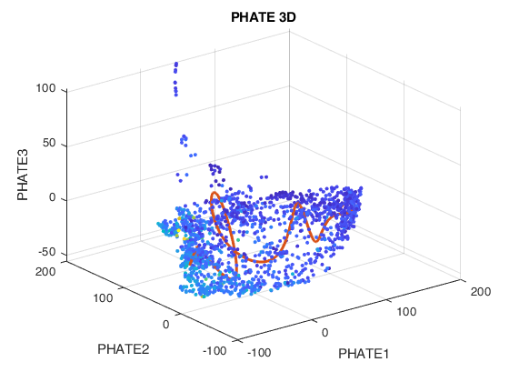
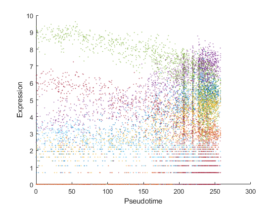

Demonstration of Pseudotime Analysis and Gene Network Functions
Contents
- Load example data set, X
- Select genes with at least 3 cells having more than 5 reads per cell.
- Trajectory analysis using the PHATE+splinefit method
- Plot gene expression profile of cells ordered according to their pseudotime T.
- Trajectory analysis using TSCAN
- Construct single-cell gene regulatory network (scGRN)
- Using principal component regression (PCNet) method
- Using GENIE3 method
- The End
Load example data set, X
cdgea; % set working directory [X,genelist]=sc_readfile('example_data/GSM3044891_GeneExp.UMIs.10X1.txt');
Reading example_data/GSM3044891_GeneExp.UMIs.10X1.txt ...... done.
Select genes with at least 3 cells having more than 5 reads per cell.
[X,genelist]=sc_selectg(X,genelist,5,3);
Trajectory analysis using the PHATE+splinefit method
s=run_phate(X,3,true); [t,xyz1]=i_pseudotime_by_splinefit(s,1); hold on plot3(xyz1(:,1),xyz1(:,2),xyz1(:,3),'-r','linewidth',2);
% Calculte pseudotime T figure; t=sc_trajectory(X,"type","splinefit","plotit",true);
Doing PCA
PCA using random SVD
PCA took 0.27008 seconds
using alpha decaying kernel
Computing alpha decay kernel:
Number of samples = 1567
First iteration: k = 100
Number of samples below the threshold from 1st iter: 1566
Using radius based search for the rest
Symmetrize affinities
Done computing kernel
Computing kernel took 0.078255 seconds
Make kernel row stochastic
Running PHATE without landmarking
Diffusing operator
Diffusion took 9.1571 seconds
Computing potential distances
using -log(P) potential distance
Computing potential distance took 0.41751 seconds
Doing classical MDS
CMDS took 0.021124 seconds
Doing metric MDS:
Stress Norm of Norm of Line Search
Iteration Criterion Gradient Step Iterations
---------------------------------------------------------------------------
0 0.999522 0.000282023
1 0.148816 0.000168591 2447.9 12
2 0.115937 0.00018191 363.837 9
3 0.0737291 0.000141493 379.342 10
4 0.0604121 8.66234e-05 134.655 10
5 0.054538 6.24838e-05 108.907 16
6 0.0514969 4.04333e-05 92.67 9
7 0.0504693 3.11087e-05 47.3096 18
8 0.0496663 2.11093e-05 47.4086 12
9 0.0492983 1.63325e-05 31.8452 14
10 0.0491243 1.16795e-05 20.8319 27
11 0.0490121 8.99103e-06 18.6061 15
12 0.0489315 7.85705e-06 17.2886 15
13 0.0488676 7.04324e-06 17.4518 13
14 0.04883 5.88304e-06 12.455 13
15 0.0487963 4.95203e-06 13.3543 18
16 0.0487702 4.78966e-06 12.7936 12
17 0.0487469 4.04121e-06 11.5444 12
18 0.0487311 3.9257e-06 8.30831 16
19 0.0487178 3.17517e-06 8.72657 15
20 0.0487078 2.47081e-06 7.44948 21
21 0.0487018 1.94495e-06 5.32097 14
22 0.0486985 1.28111e-06 3.83038 10
23 0.0486971 9.51081e-07 2.32991 21
24 0.0486964 7.38112e-07 1.89225 10
25 0.0486959 5.43906e-07 1.45018 20
26 0.0486955 4.94437e-07 1.34116 20
27 0.0486953 4.4092e-07 1.49772 21
28 0.0486951 3.9543e-07 1.40943 15
29 0.0486949 3.98216e-07 1.36613 11
30 0.0486947 3.74025e-07 1.57275 21
31 0.0486945 4.24814e-07 1.99629 17
32 0.0486943 4.37115e-07 2.63099 16
33 0.0486941 4.38984e-07 2.61138 16
34 0.0486939 3.85258e-07 2.26451 16
35 0.0486938 2.88461e-07 1.33634 13
36 0.0486937 2.07201e-07 0.742012 20
37 0.0486937 1.42661e-07 0.430715 18
Iterations terminated: Relative change in criterion less than OPTIONS.TolFun.
37 iterations, Final stress criterion = 0.0486937
MMDS took 15.4754 seconds
Done.
Total time 25.4194 seconds
 Plot gene expression profile of cells ordered according to their pseudotime T.
r=corr(t,X','type','spearman'); % Calculate linear correlation between gene expression profile and T [~,idxp]= maxk(r,4); % Select top 4 positively correlated genes [~,idxn]= mink(r,3); % Select top 3 negatively correlated genes selectedg=genelist([idxp idxn]); % Plot expression profile of the 5 selected genes try figure; i_plot_pseudotimeseries(log(1+X),genelist,t,selectedg) catch end % % Nonlinear correlation % % r=zeros(size(X,1),1); % for k=1:size(X,1) % k % r(k)=distcorr(t,double(X(k,:))'); % end % [~,idxp]= maxk(r,3); % [~,idxn]= mink(r,2); % selectedg=genelist([idxp; idxn]); % figure; % i_plot_pseudotimeseries(log(1+X),genelist,t,selectedg)
Trajectory analysis using TSCAN
Calculte pseudotime T
figure; t=sc_trajectory(X,"type","tscan","plotit",true); r=corr(t,X','type','spearman'); % Calculate linear correlation between gene expression profile and T [~,idxp]= maxk(r,4); % Select top 4 positively correlated genes [~,idxn]= mink(r,3); % Select top 3 negatively correlated genes selectedg=genelist([idxp idxn]); % Plot expression profile of the 5 selected genes figure; i_plot_pseudotimeseries(log(1+X),genelist,t,selectedg)
Warning: Failed to converge in 100 iterations for gmdistribution with 8 components
Error using predict (line 85)
No valid system or dataset was specified.
Error in i_plot_pseudotimeseries (line 66)
Pk=[Pk plot(t,predict(fitm1,t),'-','LineWidth',3)];
Error in demo_script5 (line 62)
i_plot_pseudotimeseries(log(1+X),genelist,t,selectedg)
Construct single-cell gene regulatory network (scGRN)
Using principal component regression (PCNet) method
X50=X(1:50,:); genelist50=genelist(1:50); A=sc_pcnet(X50); % Plot constructed network % A=A.*(abs(A)>quantile(abs(A(:)),0.9)); G=digraph(A,genelist50); LWidths=abs(5*G.Edges.Weight/max(G.Edges.Weight)); LWidths(LWidths==0)=1e-5; figure; plot(G,'LineWidth',LWidths); p.MarkerSize = 7; p.Marker = 's'; p.NodeColor = 'r';
Using GENIE3 method
X20=X(1:20,:); genelist20=genelist(1:20); A=run.GENIE3(X20); % Plot constructed network % A=A.*(abs(A)>quantile(abs(A(:)),0.9)); G=digraph(A,genelist20); LWidths=abs(5*G.Edges.Weight/max(G.Edges.Weight)); LWidths(LWidths==0)=1e-5; figure; plot(G,'LineWidth',LWidths); p.MarkerSize = 7; p.Marker = 's'; p.NodeColor = 'r';